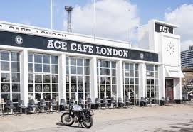
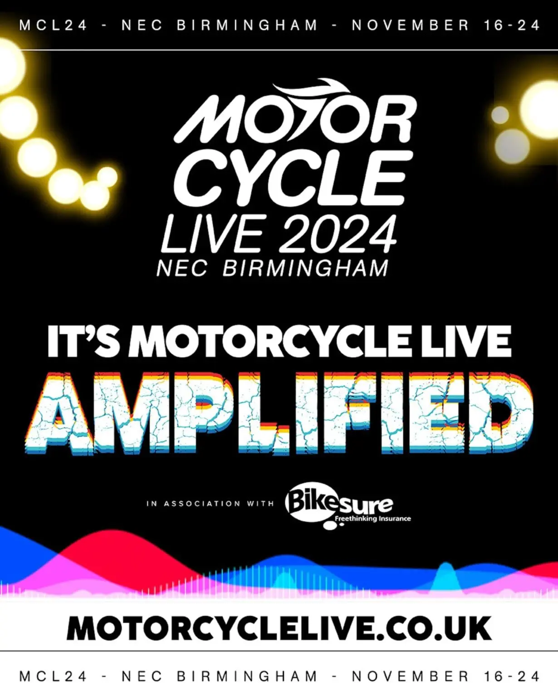

Lugares Emblemáticos
El Reino Unido cuenta con lugares icónicos para los amantes de las motos, como el Ace Cafe London y el National Motorcycle Museum.
Eventos y Clubes
Eventos como el Motorcycle Live y clubes como el 59 Club son parte fundamental de la cultura motera británica.
